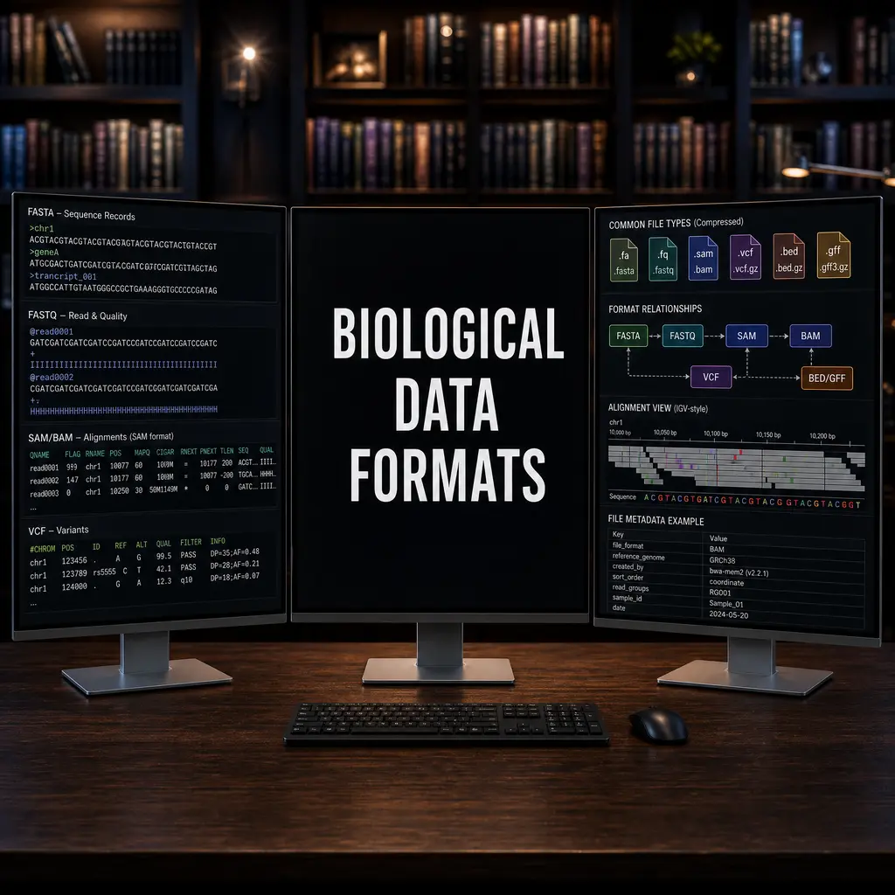
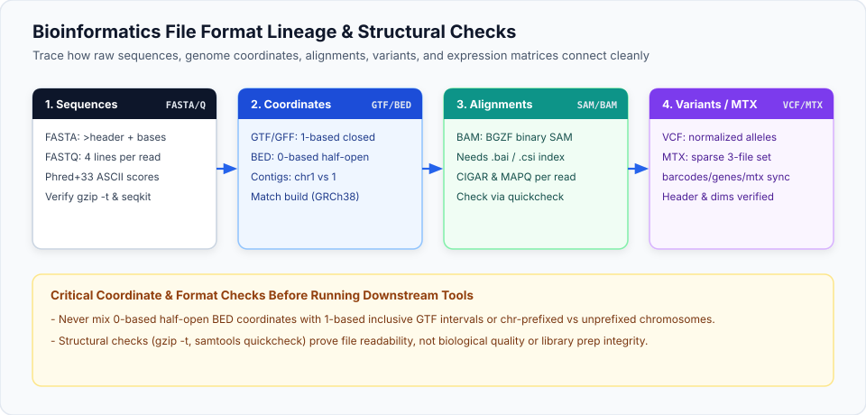

Biological Data Formats: A Practical Field Guide
Nasir Mahmood Abbasi, PhD
Bioinformatics Educator

Before a pipeline reads a file, check what it represents, how records are encoded, and which reference or sample metadata it assumes. These inspections can catch format mismatches early; they cannot establish biological validity.
Format: Reference. Open this reference alongside your own FASTQ, FASTA, GTF, BAM, or VCF files to run quick read-only structural checks and verify coordinates before starting downstream analysis. No sequencing data are bundled.
Use this guide to identify the common sequencing and expression files, run small read-only checks, and decide what evidence to seek when a check passes or fails. Commands use example filenames and require the listed tools and your own files. The examples are not an end-to-end workflow.
Start with the file's role
| Format | What it represents | Inspect first |
|---|---|---|
| FASTA | Reference or other nucleotide/protein sequences | Are sequence identifiers and lengths from the expected reference? |
| FASTQ | Sequence reads with per-base quality strings | Do records have the expected four-line layout and paired files? |
| SAM/BAM/CRAM | Read alignments, sequence dictionary, and metadata | Does the header name the expected contigs and read groups? |
| VCF/BCF | Variant sites, annotations, and optional sample genotypes | Are reference/build, sample names, and field definitions documented? |
| BED | 0-based, half-open genomic intervals [start, end) | Are coordinates 0-based (not 1-based VCF/GTF) and contig names matched? |
| GTF/GFF | Genome features and their attributes (1-based, closed) | Do contig names, version suffixes, and feature types match the aligner/counter? |
| Count / 10x MTX / h5ad | Feature-by-sample or sparse gene-by-cell matrices | Are values integer UMIs/reads, fractional tximport estimates, or log-normalized? |
Extensions are clues, not proof of format or provenance. A file named .vcf.gz, for example, should be BGZF-compressed for indexed access with the usual tabix/BCFtools tools.
Prepare a safe inspection session
Run these from a directory containing your own inputs, or replace each name with its path. The commands below do not overwrite input files. samtools faidx writes a companion .fai index if one is absent, so choose a writable directory or make that side effect explicit.
# Confirm paths and file sizes, then check detected types
ls -lh reference.fa reads_R1.fastq.gz reads_R2.fastq.gz aligned.bam variants.vcf.gz annotation.gtf counts.tsv
file reference.fa reads_R1.fastq.gz aligned.bam variants.vcf.gz annotation.gtf counts.tsv
# Record tool versions when available
samtools --version | head -n 1
bcftools --version | head -n 1Inspect sequence and read files
FASTA: sequences and reference identity
# Display initial sequence identifiers
grep -m 6 '^>' reference.fa
# Create a random-access index if absent, then inspect its first entries
samtools faidx reference.fa
head -n 3 reference.fa.faiThe .fai index lists sequence name, length, and byte offsets. Compare sequence names and lengths with the expected assembly, but do not infer the assembly from them alone. Preserve the reference source, release, and checksum. Index creation does not validate that the sequence is the right one for your experiment.
FASTQ: four-line records and paired files
# Count lines and check whether the total is divisible by four
set -o pipefail
zcat reads_R1.fastq.gz | awk 'END {printf "Lines: %d; records if four-line: %d; remainder: %d\n", NR, int(NR/4), NR%4}'
# Inspect three records
zcat reads_R1.fastq.gz | sed -n '1,12p'
# Optional summary, if seqkit is installed
seqkit stats reads_R1.fastq.gzIn the conventional FASTQ layout, each record has a header beginning with @, a sequence, a + separator, and a quality string of matching length. A nonzero line-count remainder is a warning, not a complete parser-level validation. This quick check assumes unwrapped four-line records; malformed wrapping can invalidate that assumption. pipefail makes a decompression failure visible through the pipeline status in common shells such as Bash.
For paired-end data, compare record counts and read-name identifiers in R1 and R2. Equal counts alone do not show that mates are in the same order or correctly paired. The R-first check below reads both gzip-compressed files in lockstep, verifies four-line records and equal sequence/quality lengths, and compares the first header token after removing a terminal /1 or /2. It assumes the remaining token is identical between mates; if your provider uses a different naming convention (for example, mate labels in a second header field), inspect its documentation and adapt the normalization rather than accepting a mismatch blindly.
R: compare paired read identifiers
Save this base R script as check_mates.R and run Rscript --vanilla check_mates.R reads_R1.fastq.gz reads_R2.fastq.gz. It streams one four-line record at a time rather than loading both files into memory.
args <- commandArgs(trailingOnly = TRUE)
if (length(args) != 2L) stop("Usage: Rscript check_mates.R R1.fastq.gz R2.fastq.gz", call. = FALSE)
check_mates <- function(paths) {
handles <- lapply(paths, gzfile, open = "rt")
on.exit(lapply(handles, close), add = TRUE)
next_id <- function(handle, path) {
block <- readLines(handle, n = 4L, warn = FALSE)
if (!length(block)) return(NULL)
if (length(block) != 4L) stop(path, ": incomplete four-line record", call. = FALSE)
if (!startsWith(block[[1]], "@") || !startsWith(block[[3]], "+") ||
nchar(block[[2]], type = "bytes") != nchar(block[[4]], type = "bytes")) {
stop(path, ": malformed record near ", block[[1]], call. = FALSE)
}
token <- sub("[[:space:]].*$", "", substring(block[[1]], 2L))
if (!nzchar(token)) stop(path, ": missing read identifier", call. = FALSE)
sub("/[12]$", "", token)
}
n <- 0L
repeat {
a <- next_id(handles[[1]], paths[[1]])
b <- next_id(handles[[2]], paths[[2]])
if (is.null(a) && is.null(b)) break
n <- n + 1L
if (is.null(a) || is.null(b)) stop("FAIL: different record counts at record ", n, call. = FALSE)
if (!identical(a, b)) stop("FAIL: mate identifiers/order differ at record ", n, call. = FALSE)
}
if (n) cat(sprintf("PASS: %d paired records; normalized identifiers match in order\n", n))
else cat("PASS: both files are empty\n")
}
check_mates(args)Python alternative: the same paired-record check
This standard-library route requires Python 3.9 or later for removesuffix. It applies the same first-token and terminal mate-suffix convention to ordinary read names.
python3 - reads_R1.fastq.gz reads_R2.fastq.gz <<'PY'
import gzip, itertools, sys
def records(path):
with gzip.open(path, "rt") as f:
while True:
block = list(itertools.islice(f, 4))
if not block:
return
if len(block) != 4:
raise ValueError(f"{path}: incomplete four-line record")
name, seq, plus, qual = (line.rstrip("\r\n") for line in block)
if not name.startswith("@") or not plus.startswith("+") or len(seq) != len(qual):
raise ValueError(f"{path}: malformed record near {name!r}")
yield name[1:].split()[0].removesuffix("/1").removesuffix("/2")
n = 0
for n, (a, b) in enumerate(itertools.zip_longest(records(sys.argv[1]), records(sys.argv[2])), 1):
if a is None or b is None:
raise SystemExit(f"FAIL: files have different record counts (first unmatched record {n})")
if a != b:
raise SystemExit(f"FAIL: mate identifiers/order differ at record {n}: {a!r} vs {b!r}")
print(f"PASS: {n} paired records; normalized identifiers match in order" if n else "PASS: both files are empty")
PYA PASS establishes only that the parsed records have matching normalized identifiers in order under the stated convention; it does not establish sample identity or biological validity. Any malformed record, count difference, or identifier mismatch stops the check with the first location to investigate. Both small checks assume readable gzip inputs and ordinary first-token identifiers; adapt the opener for uncompressed FASTQ. They are not full FASTQ specification or compression-integrity validators. Do not treat quality scores as comparable across files until the encoding and instrument/pipeline provenance are known.
Check alignments, variants, and coordinate conventions
SAM/BAM/CRAM: headers, bitwise FLAGs, CIGAR strings, and reference lookup
# Header metadata, including @SQ sequence dictionary and @RG read groups
samtools view -H aligned.bam | sed -n '1,40p'
# Lightweight truncation check, followed by alignment-flag summaries
samtools quickcheck aligned.bam && echo "quickcheck passed" || echo "quickcheck failed"
samtools flagstat aligned.bam | sed -n '1,10p'
# For reference-compressed CRAM files, supply the exact reference FASTA via -T (or REF_PATH):
samtools view -T reference.fa -H sample.cram | head -n 20Compare every @SQ contig name and length (LN:) with your reference .fai index, and verify @RG read-group SM: sample tags before variant calling. Below is one annotated SAM record illustrating the 11 mandatory tab-separated fields (Li et al., 2009):
read_042 99 chr17 7674220 60 10S140M = 7674410 330 ACGT... IIII... NM:i:1 RG:Z:S01FLAG = 99(1 + 2 + 32 + 64): read is paired (1), mapped in a proper pair (2), mate is on the reverse strand (32), and this is read 1 (64; its reverse-strand mate carriesFLAG = 147). Runsamtools flags 99anytime to decode bitwise flags without memorizing sums.POS = 7674220andMAPQ = 60: 1-based leftmost aligned reference base onchr17, with Phred-scaled mapping-uniqueness score60(note: in STAR RNA-seq BAMs,255denotes a unique mapper rather than unavailable MAPQ).CIGAR = 10S140M: the first 10 bases at the 5' end were soft-clipped (10S, retained inSEQbecause of unaligned adapter or overhang) followed by 140 aligned bases (140M, which include both sequence matches and single-base mismatches; inspectNM:i:1orMDfor exact mismatches).
VCF/BCF: header definitions, -H body records, and genotype fields
# Print ## meta-information header lines, then inspect the first 10 variant records (-H skips header!)
bcftools view -h variants.vcf.gz | sed -n '1,80p'
bcftools view -H variants.vcf.gz | head -n 10
# Summarize records; index statistics require a BGZF (.vcf.gz) + .tbi/.csi index
bcftools stats variants.vcf.gz | sed -n '1,40p'
bcftools index --stats variants.vcf.gzNotice bcftools view -H (--no-header): running bcftools view variants.vcf.gz | sed -n '1,10p' without -H prints only the first ten ##contig or ##INFO header lines rather than variant rows. Each VCF body row is 1-based and carries sample-level allele evidence in FORMAT + sample columns:
chr17 7674220 . C T 1420.4 PASS DP=82;AF=0.5 GT:AD:DP:GQ 0/1:44,38:82:99Here 0/1 is an unphased heterozygous genotype (0|1 when phased), AD = 44,38 records 44 reference (C) reads and 38 alternate (T) reads (VAF = 38 / 82 = 0.463), DP = 82 is sample filtered read depth, and GQ = 99 is genotype Phred confidence.
Coordinate trap: 0-based half-open BED vs 1-based closed VCF and GTF
Off-by-one errors happen whenever BED intervals are mixed carelessly with VCF or GTF coordinates. For the single nucleotide at chr17 position 7,674,220 (TP53 coding SNV):
- 1-based closed (
VCF,GTF/GFF3,SAM POS, IGV locus box): start =7674220, end =7674220(length = end - start + 1 = 1). - 0-based half-open (
BED,BAMbinarypos, Python slicing):chromStart = 7674219,chromEnd = 7674220(length = chromEnd - chromStart = 1). Convert withbedtoolsorbcftools -R targets.bed(which already knows.bedis 0-based!) rather than subtracting 1 ad hoc in spreadsheets.
Read annotations and count matrices (bulk and single-cell 10x MTX)
GTF/GFF: feature columns and coordinates
head -n 20 annotation.gtf
awk -F'\t' '$0 !~ /^#/ {print $3}' annotation.gtf | sort | uniq -c | sort -nr | head -n 15GTF/GFF feature lines have nine tab-separated fields; skipping # directive headers in awk ensures feature-type counts reflect real annotations (exon, CDS, transcript, gene). Confirm whether contig names use chr1 (GENCODE/UCSC) or 1 (Ensembl) before running STAR or featureCounts.
Count matrices and 10x sparse directories (matrix.mtx.gz / h5ad)
# Inspect a bulk TSV count matrix header and column count
head -n 6 counts.tsv
awk -F '\t' 'NR==1 {print; print "Columns:", NF}' counts.tsv
# Inspect a 10x Genomics sparse Matrix Market directory (barcodes = columns, features = rows)
zcat filtered_feature_bc_matrix/matrix.mtx.gz | head -n 5
zcat filtered_feature_bc_matrix/features.tsv.gz | head -n 3
zcat filtered_feature_bc_matrix/barcodes.tsv.gz | head -n 3In a 10x Genomics Market Exchange directory, line 3 of matrix.mtx.gz prints n_features n_barcodes n_nonzero_entries; verify that n_features equals the line count of features.tsv.gz and n_barcodes equals barcodes.tsv.gz (note that Python AnnData / .h5ad transposes this convention to cells x genes, i.e., n_obs x n_vars). For bulk RNA-seq tables, fractional numbers are not always normalized expression: probabilistic transcript quantifiers (Salmon, kallisto, RSEM) output legitimate fractional estimated counts from multi-mapping expectation-maximization. Import them into DESeq2 or edgeR via tximport / tximeta (Soneson et al., 2015) with transcript-length offsets rather than rounding them manually or treating them as TPM.
Use failures to narrow the diagnosis
- FASTQ line remainder, decompression error, or
exit 141underpipefail: test stream integrity withgzip -t reads_R1.fastq.gz. Note that underset -o pipefail, pipingzcat large.fastq.gz | head -n 12causesheadto close the pipe early sozcatreceivesSIGPIPE(exit status141); run full-stream checks withgzip -trather than mistakingSIGPIPEon a preview for corruption. - Contigs missing during region extraction or CRAM decode failure: compare BAM
@SQnames and lengths with the FASTA.faiindex, and pass-T reference.fawhen decoding CRAM files whose MD5 reference cache is offline. - VCF fields rejected or samples absent: inspect
bcftools view -hand sample columns (bcftools query -l variants.vcf.gz) before filtering. - Decimal values in a count table: distinguish normalized values (TPM/FPKM/log-CPM, which must not be fed to count GLMs) from
Salmon/kallistoexpected counts (which belong intximport).

What a successful check does not establish
File parsers and summary commands detect selected structural problems. They do not establish that files belong to the same sample, reference build, assay, or experimental design. Keep a sample sheet with explicit sample IDs and file paths; record reference and annotation releases, tool versions, checksums, and the commands used.
References
- Li, H., Handsaker, B., Wysoker, A., et al. (2009). The Sequence Alignment/Map format and SAMtools. Bioinformatics, 25(16), 2078-2079. doi:10.1093/bioinformatics/btp352
- Danecek, P., Bonfield, J. K., Liddle, J., et al. (2021). Twelve years of SAMtools and BCFtools. GigaScience, 10(2), giab008. doi:10.1093/gigascience/giab008
- Soneson, C., Love, M. I., & Robinson, M. D. (2015). Differential analyses for RNA-seq: transcript-level estimates improve gene-level inferences (
tximport). F1000Research, 4, 1521. doi:10.12688/f1000research.7563.2 - Cock, P. J. A., Fields, C. J., Goto, N., Heuer, M. L., & Rice, P. M. (2010). The Sanger FASTQ file format for sequences with quality scores. Nucleic Acids Research, 38(6), 1767-1771. doi:10.1093/nar/gkp1137
- HTS format specifications (SAM/BAM/CRAM, VCF/BCF) and GFF3 specification
Software and package behaviour can change. Please re-check commands against the official documentation. If a command does not work, you find an error, or the tutorial is no longer reproducible, please report it through the Contact page.
Author: Nasir Mahmood Abbasi, PhD - Category: Foundations & Prerequisites